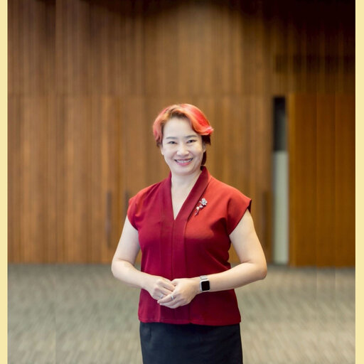
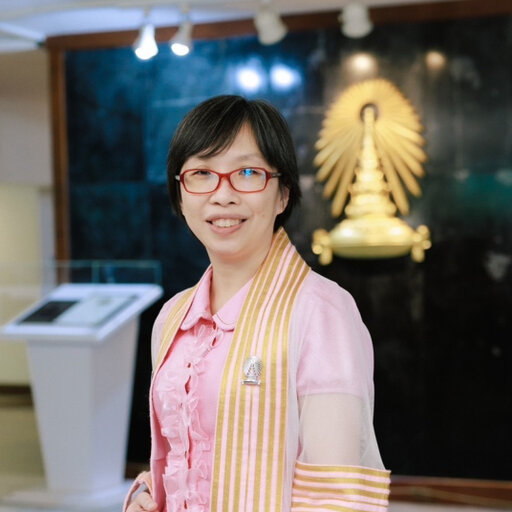
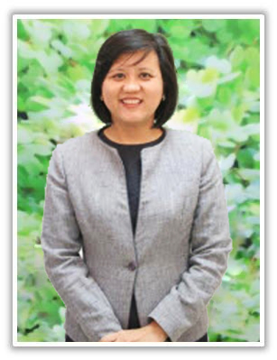
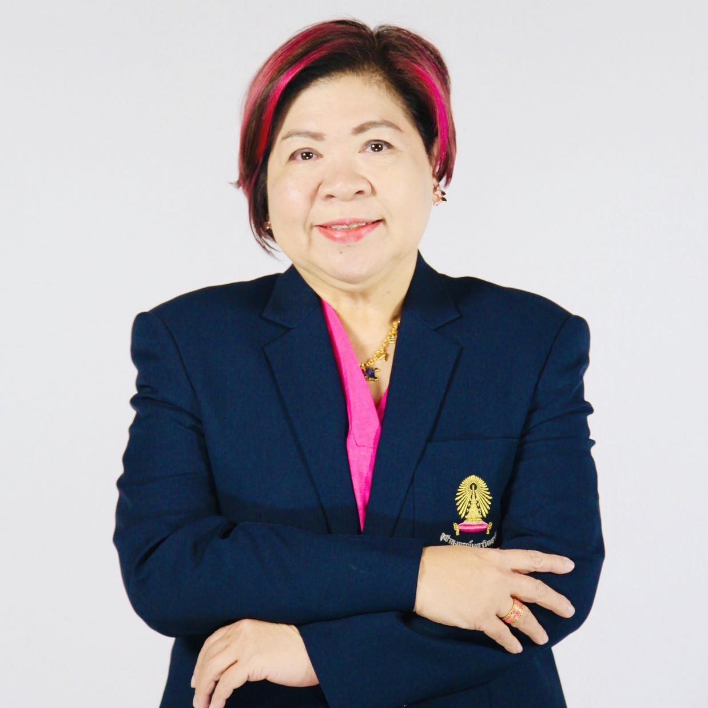
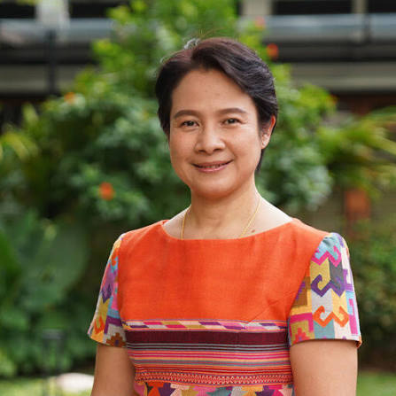
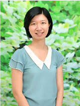

Program Overview
TEFL Chula is the Master of Education program in Teaching English as a Foreign Language (International Program) at the Faculty of Education, Chulalongkorn University. The program has run for many years; it moved to an English-medium curriculum in 2003, and since 2009 has operated fully as an international program. The department continues working to broaden its international academic environment by recruiting more overseas students and inviting visiting scholars.

Goals and Objectives
Graduating professional teachers
To graduate teachers who can competently develop EFL curricula and manage instruction by drawing on linguistics, pedagogy and research, while working effectively across culturally diverse settings.
Generating research and new knowledge
To generate research and new knowledge that improves English instruction, learner development and teaching methods across different contexts.
Academic Staff






Guest Lecturers
A selection of recent visiting lecturers hosted by the program.